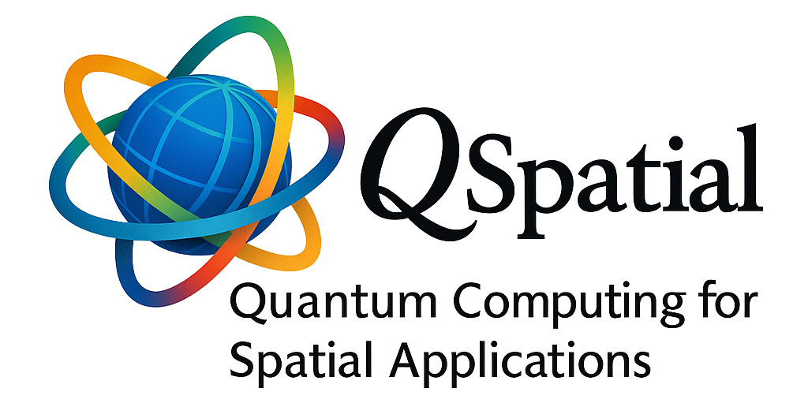

2nd ACM SIGSPATIAL International Workshop on Quantum Computing and Quantum-Inspired Technologies for Spatial Data Systems and Applications
(Q-Spatial 2026)
Co-located with ACM SIGSPATIAL 2026 (location TBD)
Date: TBD
Co-located with
 Important Dates
|
Welcome to Q-Spatial 2026The 2nd ACM SIGSPATIAL International Workshop on Quantum Computing and Quantum-Inspired Technologies for Spatial Data Systems and Applications Workshop OverviewQuantum computing and other quantum-driven technologies have been a field of technology investment for decades. With promising potential, significant investments from many governmental and industrial parties are poured into winning the race. The SIGSPATIAL community is building a capacity in that promising technology field. This workshop aims to bring together SIGSPATIAL community members interested in exploring quantum technologies in spatial systems and applications. It will also invite non-SIGSPATIAL members who are experts in the field of quantum technologies to enrich the community and foster learning and collaboration. The workshop will be open to all levels of expertise, allowing participants to contribute or learn. Workshop Mission and GoalsThe high-level philosophy of organizing this workshop is engaging, motivating, encouraging, and helping interested SIGSPATIAL community members to explore spatial problems that could take advantage of quantum computing. This mission breaks down into the following goals:
Workshop Organizers
Workshop ProgramThe detailed program for Q-Spatial 2026 will be announced closer to the workshop date. Please check back later for updates on tutorials, keynote speakers, and the full schedule. Call for ParticipationACM SIGSPATIAL 2026 is hosting the 2nd workshop on Quantum Computing and Quantum-Inspired Technologies for Spatial Data Systems and Applications (Q-Spatial). Our program will include a variety of tutorials, talks, and topics, covering both introductory and advanced material on quantum computing fundamentals. The workshop does not assume any level of knowledge or expertise in quantum computing. What to Do Next?The call for participation form will be released closer to the workshop date. Please check back for updates, or contact the organizers for more information. Workshop ArchivePast editions of the Q-Spatial Workshop:
|